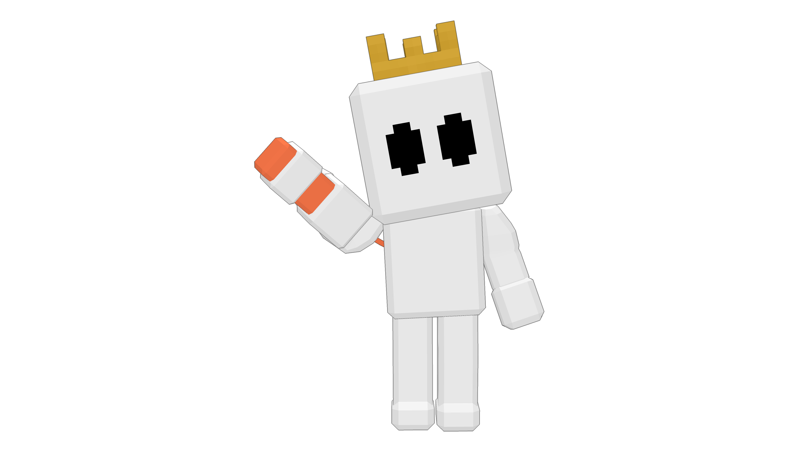
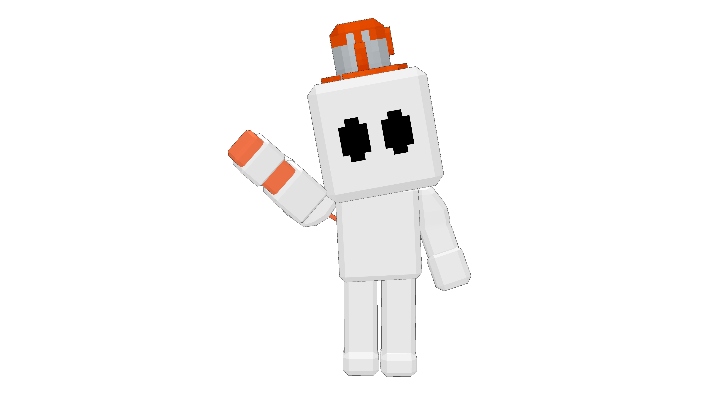
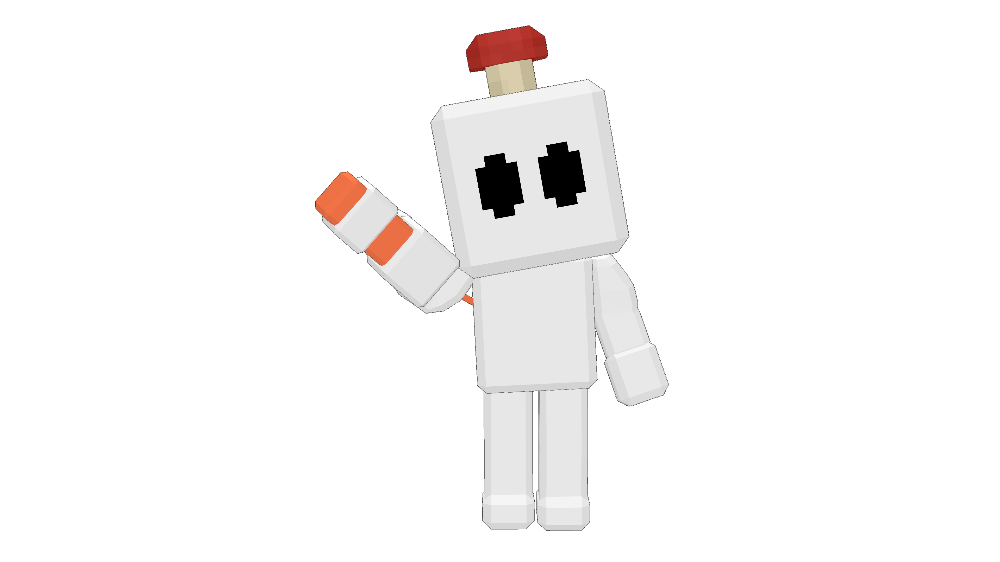
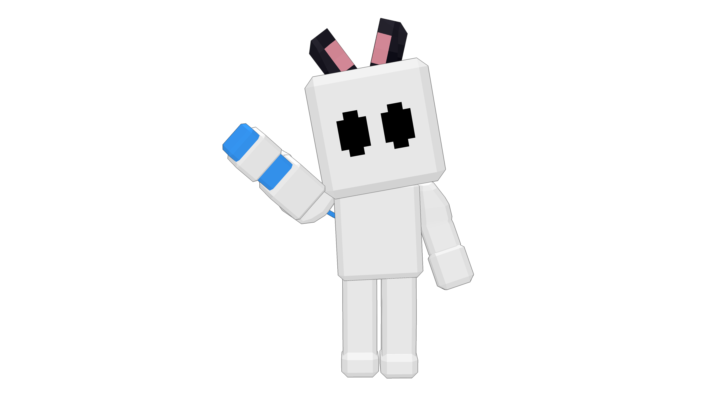
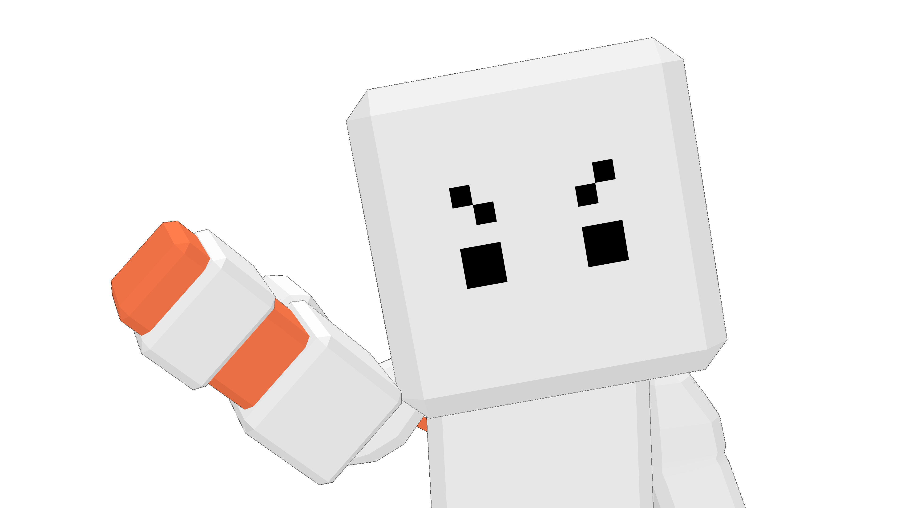
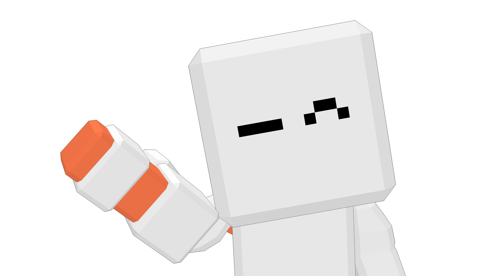

BUY ON STEAM
BUY ON STEAMCHARACTER CUSTOMIZATION
LOOK GOOD.
GET SPLATTED.
Hats, faces, colors, and emotes.
Pick a look before you join the hunt.

HATS
TOP IT OFF.



Choose from your available hats. Earn more by playing.
FACES
WEAR YOUR MOOD.

